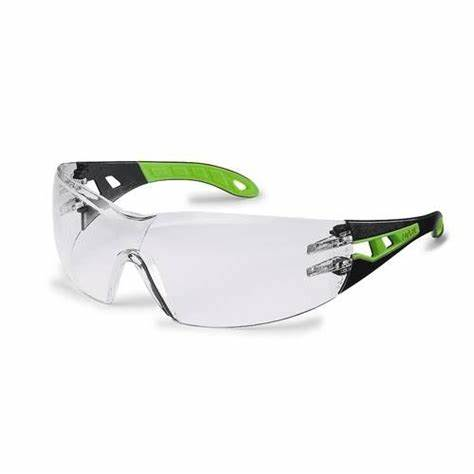

Your work
Student details
Your entries save automatically in this browser. Use Download evidence PDF before leaving the page.
Weeks 3-4
This module
Move from marked timber to real components by controlling cuts, clamping, squareness and divider fit.
Theory 1
Cutting and clamping controls
Once timber components are laid out, accuracy comes from a secure sequence: cutting setup, clamp security, and controlled test cuts before final cuts are completed.
In this phase, the key quality control questions are:
- Is each part supported so it cannot move during a cut?
- Has the clamp setup been checked by both visual and feel feedback?
- Is the blade/bit, guard and feed path appropriate for the exact operation?
A useful evidence habit is to keep short note lines for each assembly decision: what was set, what was checked, what changed, and who confirmed it.
Theory 2
Butt joint quality and divider fit
Divider fit is judged on function and consistency. A divider that slides, sticks or moves too freely can both reduce function and reduce marks quality. This unit uses controlled, repeatable checks before final assembly.
- Check each component for edge accuracy and contact quality.
- Dry fit divider and body edges before any permanent fixation.
- Test divider movement and alignment under controlled pressure.
- Use tiny adjustments and re-check before final completion.
If the divider fit is not consistent, stop and rework the relevant edge and note what changed. You want evidence of process control, not a lucky final fit.
Theory 3
Common assembly errors and recovery
Most reversals at this stage happen from small misses: slight angle drift, uneven edge contact, and clamps removed too early. Recovery is deliberate and traceable:
- Pause the operation and do not force an awkward fit.
- Identify the first evidence point that shows the error.
- Adjust with a controlled correction, then re-check squareness and divider movement.
Use this section to practice evidence that supports correction, including photos, measurement checks and a one-line rationale for each correction.

Guided practice
Weeks 3-4 knowledge checks
Use the same reflection-and-feedback loop before moving to the next task.
Apply your learning
Scaffolded written responses
Write first, then compare your response to model direction.
Focus on what you observed and what you changed. Vague claims do not earn full credit in this module.
Finish the two-week block
Save your evidence
Your work saves in this browser, but browser storage is not the official submission. Download this module PDF before changing devices or clearing browser data.
No marks, answers or personal details are sent from this webpage.